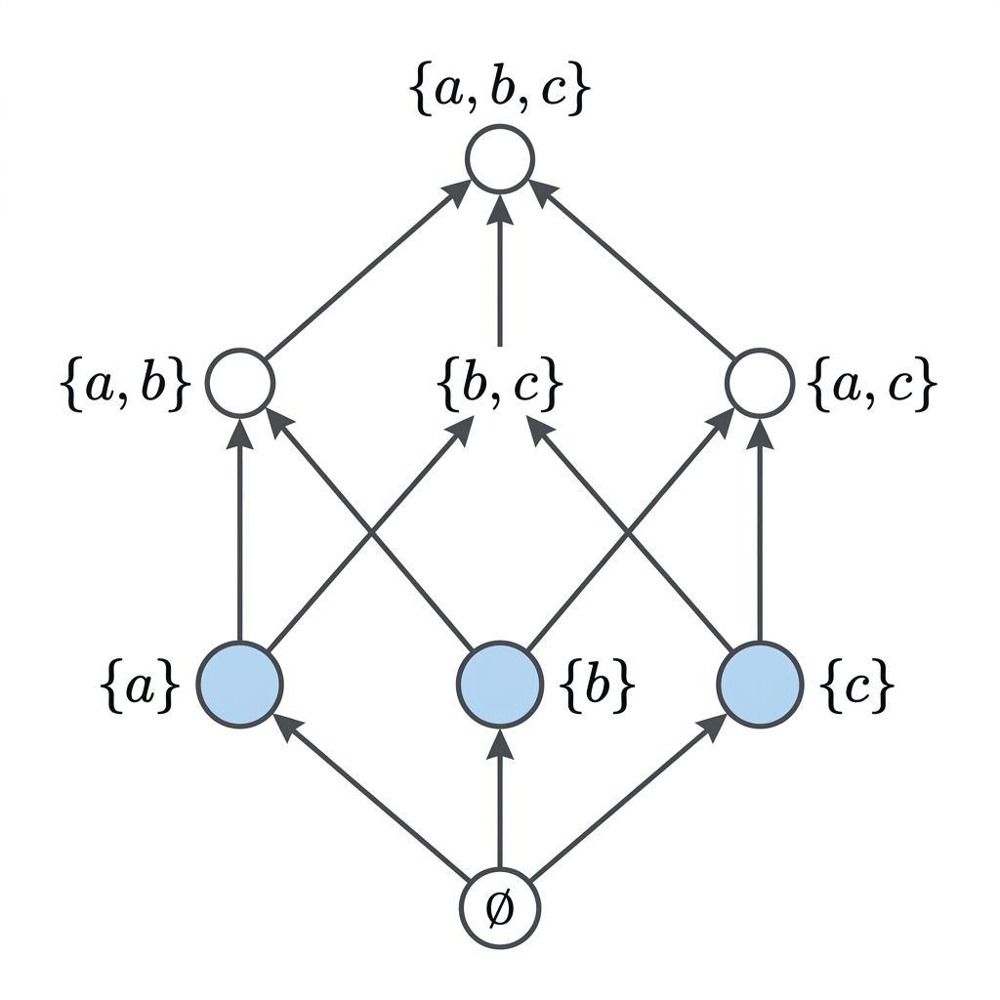

Cardinality of Finite Boolean Algebras

Mathematical Exposition
In order theory and abstract algebra, a Boolean algebra generalizes the properties of set operations (union, intersection, complement). A fundamental classification theorem states that every finite Boolean algebra is isomorphic to the power set of some set. This theorem formalizes a direct consequence of that classification: the cardinality of any finite Boolean algebra $\alpha$ is exactly $2^k$, where $k$ is the number of atoms in $\alpha$.
Key Definitions
- Boolean Algebra: A distributive lattice with a least element $\bot$, a greatest element $\top$, and complements (where each element $x$ has a complement $x^c$ satisfying $x \sqcup x^c = \top$ and $x \sqcap x^c = \bot$).
- Atom: A minimal non-zero element in the algebra. Formally, an element $a \neq \bot$ is an atom if for any $x \in \alpha$ satisfying $\bot \le x \le a$, we have either $x = \bot$ or $x = a$.
- Bijection to Power Set: To prove the cardinality formula, we establish a bijection between $\alpha$ and the set of all subsets of atoms of $\alpha$, denoted by $\mathcal{P}(\text{Atoms})$.
The Core Proof Logic
Let $\text{Atoms} = \{a \in \alpha \mid \text{IsAtom } a\}$. We define two maps:
- The Decomposition Map $f: \alpha \to \mathcal{P}(\text{Atoms})$: Maps an element $x$ to the set of atoms that are less than or equal to it: $$f(x) = \{ a \in \text{Atoms} \mid a \le x \}$$
- The Reconstruction Map $g: \mathcal{P}(\text{Atoms}) \to \alpha$: Takes a finite set of atoms $s$ and returns their supremum (lattice join): $$g(s) = \bigsqcup_{a \in s} a$$
To show that $f$ and $g$ form a bijection, we prove two key identities:
- $g(f(x)) = x$: Every element in a finite Boolean algebra is equal to the join of the atoms below it. This is proved using the property that if $y \not\le x$, there exists an atom $a$ below $y$ that is not below $x$.
- $f(g(s)) = s$: The set of atoms below a join of atoms $s$ is exactly $s$. This is proved by induction on the size of $s$. The key inductive step relies on the "primeness" of atoms: if an atom $a$ is less than or equal to a join $x \sqcup y$, then $a \le x$ or $a \le y$.
Establishing this equivalence yields the bijection: $$\alpha \cong \mathcal{P}(\text{Atoms})$$ Because the cardinality of the power set of a finite set of size $k$ is $2^k$, it follows immediately that: $$|\alpha| = 2^{|\text{Atoms}|}$$
import Mathlib
theorem card_finite_booleanAlgebra_eq_two_pow_card_atoms
(α : Type*) [BooleanAlgebra α] [Fintype α] [DecidableEq α]
[DecidablePred (IsAtom : α → Prop)] :
Fintype.card α = 2 ^ Fintype.card {a : α // IsAtom a} := by
let f : α → Finset {a : α // IsAtom a} := fun x => Finset.filter (fun a => (a : α) ≤ x) Finset.univ
let g : Finset {a : α // IsAtom a} → α := fun s => s.sup Subtype.val
have hfg : ∀ x, g (f x) = x := fun x ↦ le_antisymm (Finset.sup_le fun a ha ↦ (Finset.mem_filter.mp ha).2)
(BooleanAlgebra.le_iff_atom_le_imp.mpr fun a ha hax ↦ Finset.le_sup (f := Subtype.val) (Finset.mem_filter.mpr ⟨Finset.mem_univ ⟨a, ha⟩, hax⟩))
have hgf : ∀ s, f (g s) = s := fun s ↦ by
ext a; simp [f, g]
refine ⟨fun ha ↦ ?_, Finset.le_sup⟩
induction' s using Finset.induction_on with b s' hb ih
· exact False.elim (a.property.1 (le_bot_iff.mp (by simpa using ha)))
· have ha_sup : ↑a ≤ ↑b ⊔ s'.sup Subtype.val := by simpa using ha
have h_prime : ∀ (x y : α), ↑a ≤ x ⊔ y → ↑a ≤ x ∨ ↑a ≤ y := fun x y h ↦ by
by_cases hx : ↑a ≤ x; · exact Or.inl hx
right; have h1 : ↑a ⊓ x = ⊥ := by
have h2 := a.property.le_iff.mp (inf_le_left : ↑a ⊓ x ≤ ↑a)
exact h2.resolve_right (fun heq => hx (heq ▸ inf_le_right))
have h2 : ↑a = ↑a ⊓ (x ⊔ y) := le_antisymm (le_inf le_rfl h) inf_le_left
rw [inf_sup_left, h1, bot_sup_eq] at h2
exact h2 ▸ inf_le_right
rcases h_prime ↑b (s'.sup Subtype.val) ha_sup with hb_or | hs'
· exact Finset.mem_insert.mpr (Or.inl (Subtype.ext ((b.property.le_iff_eq a.property.1).mp hb_or)))
· exact Finset.mem_insert.mpr (Or.inr (ih hs'))
have e : α ≃ Finset {a : α // IsAtom a} := ⟨f, g, hfg, hgf⟩
rw [← Fintype.card_finset]
exact Fintype.card_congr e